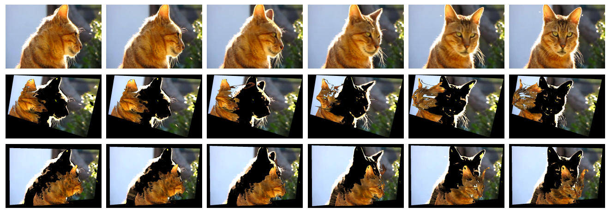

ECCV 2014 · Oral
Video Pop-up: Monocular 3D Reconstruction of Dynamic Scenes

Abstract
Consider a video sequence captured by a single camera observing a complex dynamic scene containing an unknown mixture of multiple moving and possibly deforming objects. In this paper we propose an unsupervised approach to the challenging problem of simultaneously segmenting the scene into its constituent objects and reconstructing a 3D model of the scene. The strength of our approach comes from the ability to deal with real-world dynamic scenes and to handle seamlessly different types of motion: rigid, articulated and non-rigid. We formulate the problem as hierarchical graph-cut based segmentation where we decompose the whole scene into background and foreground objects and model the complex motion of non-rigid or articulated objects as a set of overlapping rigid parts. We evaluate the motion segmentation functionality of our approach on the Berkeley Motion Segmentation Dataset. In addition, to validate the capability of our approach to deal with real world scenes we provide 3D reconstructions of some challenging videos from the YouTube-Objects dataset.